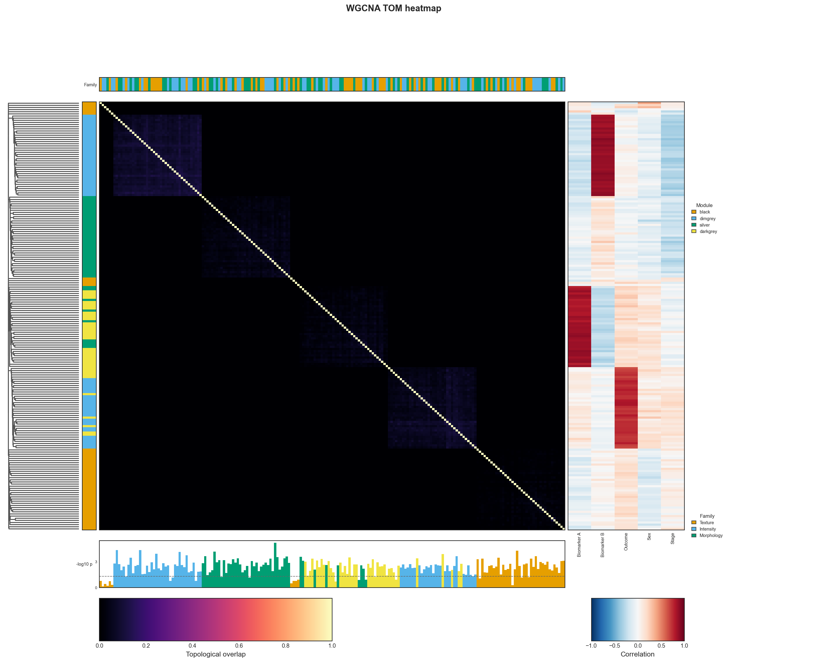

Clustered Heatmap
plot_clustered_heatmap renders a feature-by-feature similarity heatmap
ordered by hierarchical clustering, with an aligned left dendrogram, a
per-feature cluster colour strip, optional categorical annotation strips
above it, optional numeric annotation bars below it, and an optional
correlation panel to its right. It is deliberately generic — bring your own
similarity matrix and, optionally, a cluster assignment, linkage, ordering, and
annotation tracks — so it works for a WGCNA TOM or any other symmetric
similarity.
The figure has a memorable, fixed grammar — each side answers a question: the left is who? (dendrogram + module strip), the top is what kind? (categorical strips), the bottom is how much? (numeric bars), the right is related to what? (feature × clinical correlations), and the centre is the similarity itself.
From a fitted reducer
Any reducer that produces reduction artifacts feeds the heatmap directly:
from eigenradiomics import WGCNAReducer, plot_clustered_heatmap
reducer = WGCNAReducer(soft_power="auto", min_module_size=20, store_tom=True).fit(X)
fig = plot_clustered_heatmap(
reducer.get_reduction_artifacts(), # similarity (TOM), linkage, cluster labels, order
cmap="magma",
vmin=0.0,
vmax=1.0,
below_cutoff_color="#050505",
colorbar_label="Topological overlap",
)
fig.savefig("wgcna_tom.png", dpi=150)

store_tom=True is required so the TOM similarity is available in the artifacts.
Bring your own inputs
You don't need a reducer — pass any symmetric matrix and, optionally, a per-feature cluster assignment, a SciPy linkage, and/or an explicit order:
from scipy.cluster.hierarchy import linkage
from scipy.spatial.distance import squareform
from eigenradiomics import plot_clustered_heatmap
# `sim` is an (n, n) DataFrame of |correlation|, TOM, kernel similarity, ...
z = linkage(squareform(1 - sim.to_numpy(), checks=False), method="average")
fig = plot_clustered_heatmap(
sim,
linkage=z, # left dendrogram + leaf ordering
cluster_labels=labels, # per-feature module/cluster -> left colour strip
)
If you omit linkage, rows are ordered by cluster_labels (or left as given);
omit cluster_labels and the colour strip is dropped.
Top annotation strips
Pass up to a few categorical strips via top. Each is a per-feature pandas
Series (its name becomes the strip title), or a Strip for explicit control of
the title and colours. Each strip gets a colourblind-safe Okabe-Ito palette
(override with colors=) and a titled block in the stacked right-edge legend:
from eigenradiomics import plot_clustered_heatmap, Strip
fig = plot_clustered_heatmap(
reducer.get_reduction_artifacts(),
top=[
family, # a named Series -> auto Strip
Strip(region, title="Region", # explicit control
colors={"total": "#0072B2", "calcium": "#D55E00"}),
],
)
The cluster (module) strip on the left also gets a "Module" legend. Set
show_legend=False to drop the legend column.
Bottom annotation bars
Pass numeric per-feature tracks via bottom — a pandas Series (its name
becomes the track title) or a Bar for explicit control. Each bar is aligned to
the heatmap columns; by default bars are coloured by module (matching the
left cluster strip), and you can draw a dashed reference line (e.g. the
significance threshold −log10(0.05)). The shared feature tick labels move to the
bottom-most bar:
import numpy as np
from eigenradiomics import plot_clustered_heatmap, Bar
fig = plot_clustered_heatmap(
reducer.get_reduction_artifacts(),
bottom=[
neglog_p, # a named Series -> auto Bar
Bar(effect_size, title="Effect", color="0.3"), # explicit title / fixed colour
Bar(neglog_p, title="-log10 p",
reference=float(-np.log10(0.05))), # dashed significance line
],
)
Set color="by_module" (the default) to tint each bar by its feature's module,
or pass any Matplotlib colour to use a single fixed colour for the whole track.
Right correlation panel
Pass a features × variables correlation matrix via right to add a panel on the
right — typically features vs clinical variables — with its own diverging
colourbar (RdBu_r, centred at 0). Each row aligns with the heatmap's features;
the columns are the variables.
compute_clinical_correlations sources this matrix for you. Clinical variables
are mixed types, so each is numerically encoded (encode_clinical_series:
numeric → binary/ordinal tokens → alphabetical ordinal) and then correlated by
rank (Spearman by default):
from eigenradiomics import compute_clinical_correlations, plot_clustered_heatmap
corr = compute_clinical_correlations(
X, # samples × features (or a RadiomicsDataset)
clinical, # samples × variables (str/binary/continuous)
method="spearman",
min_pairs=20, # drop variables with too few / no-variance values
)
fig = plot_clustered_heatmap(reducer.get_reduction_artifacts(), right=corr)
With a RadiomicsDataset, name the metadata columns to pull directly from it:
For explicit control of the colourmap, limits, or colourbar label, wrap it in a
CorrPanel:
from eigenradiomics import CorrPanel
fig = plot_clustered_heatmap(
artifacts,
right=CorrPanel(corr, cmap="RdBu_r", vmin=-1, vmax=1, label="Spearman r"),
)
Accessibility
The defaults are chosen to stay legible for colourblind readers and in greyscale, and were verified under a deuteranopia simulation:
- Similarity (
magma) — a perceptually-uniform sequential map whose luminance increases monotonically, so magnitude reads correctly even in greyscale. - Correlation (
RdBu_r) — a diverging map centred on a near-neutral grey at zero, using red↔blue (not red↔green); the two ends remain clearly separable under deuteranopia, so the sign of a correlation is never lost. - Categories (modules / strips) — the colourblind-safe Okabe-Ito palette for up to eight categories; all eight stay mutually distinct under deuteranopia.
Two compact colourbars sit in the bottom corners (similarity bottom-left, correlation bottom-right) to keep the central matrix uncluttered.
Beyond eight categories
With more than eight categories a strip falls back to Matplotlib's tab20,
which is not colourblind-safe. Prefer ≤ 8 categories, or pass explicit
colors= / cluster_colors=.
Key options
| Argument | Purpose |
|---|---|
similarity |
symmetric matrix / DataFrame, or a ReductionArtifacts |
cluster_labels |
per-feature label → colour strip and default ordering |
linkage |
SciPy linkage → dendrogram and leaf ordering |
order |
explicit feature ordering (overrides the linkage leaves) |
cluster_colors |
{label: colour} (otherwise a colourblind-safe palette) |
top |
categorical strips above the heatmap (Series or Strip) |
bottom |
numeric bars below the heatmap (Series or Bar) |
right |
feature × variable correlation panel (DataFrame or CorrPanel) |
cmap, vmin, vmax, below_cutoff_color |
similarity colour scaling |
show_dendrogram, show_cluster_strip, show_legend |
toggle the side panels / legend |
labels |
"auto", an explicit list, or None |
See the API reference for the full signature.